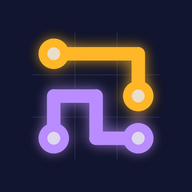
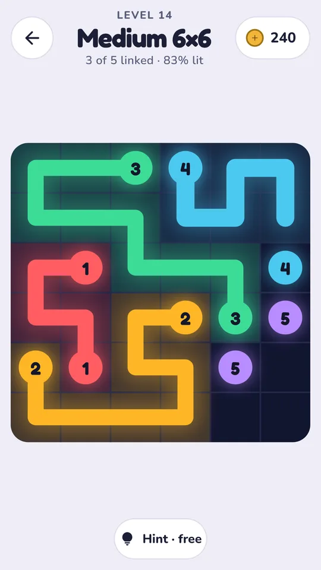
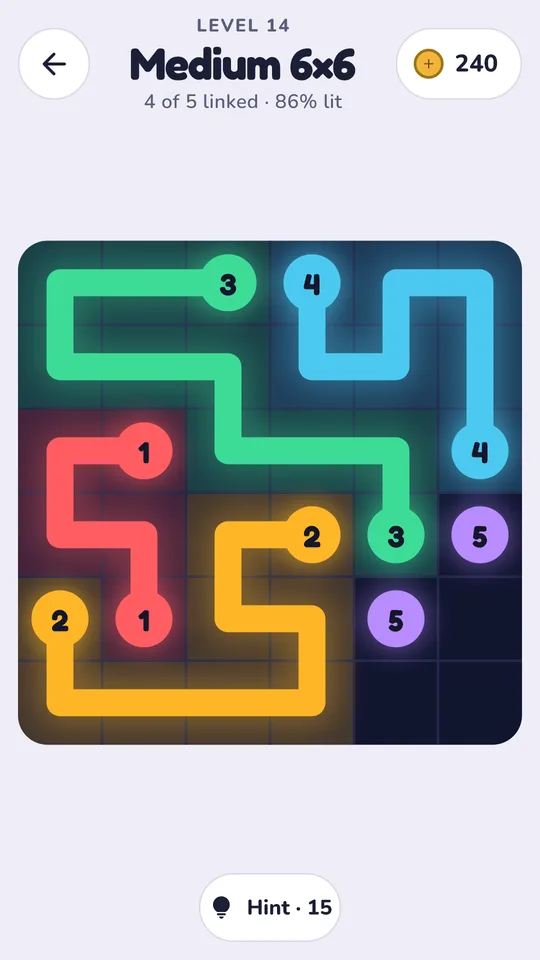
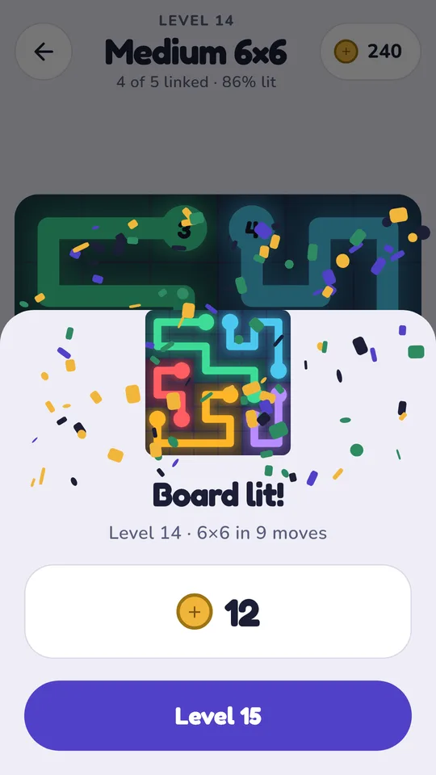
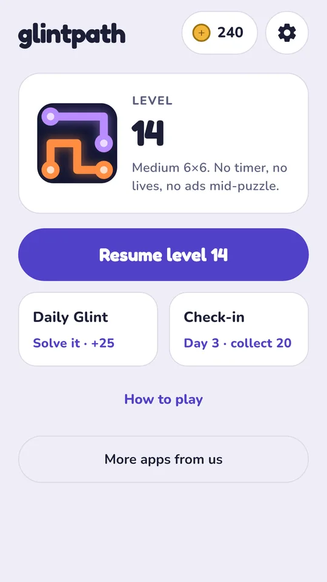
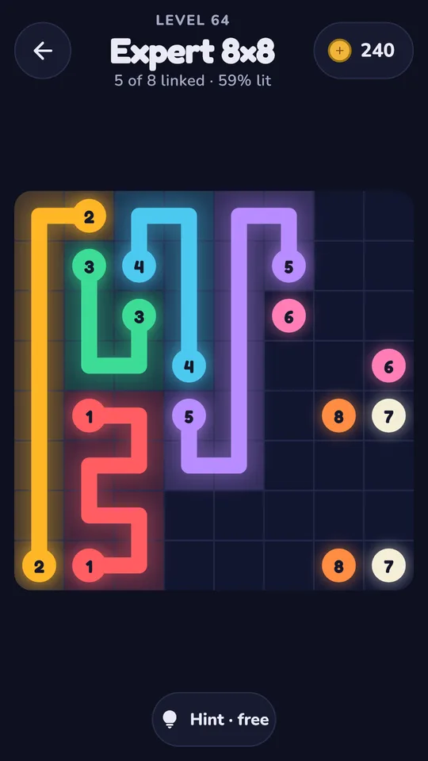

Glintpath: Connect Dots Puzzle
Connect the dots by lantern light. Drag from a glowing lantern to its twin of the same colour and number; paths can't cross, and a board is solved when every pair is linked and every square is lit. Every board can be solved, with no timer, no lives and no ads during a board. Free, plays offline, no account.
Get it on Google Play Visit the website




Features
- Drag from a lantern to its twin, square by square, up, down, left or right.
- Paths can't cross. Link every pair and light every square to finish.
- Every board is built from a full answer, so it can always be solved; any full answer you find counts.
- Drag back to shorten a path, pick one up from the middle, or cut across another and back off to restore it.
- Numbered lanterns, so pairs never depend on telling colours apart.
- Easy 5x5 up to Master 9x9 boards, a Daily Glint and a 7-day check-in for coins. Hints lay one pair; the first per board is free.
- No ads during a board, no banners; videos for coins are always your choice.